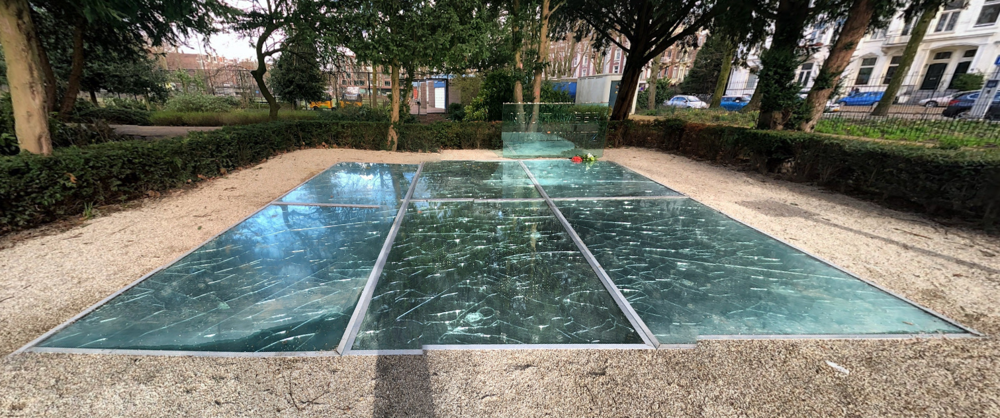

- 
Auschwitz Monument
The Auschwitz monument located in the Wertheimpark in Amsterdam is a Dutch memorial for people who died in Auschwitz and other concentration camps in the Second World War. It’s also known as Mirror monument ‘never again Auschwitz’ or Broken mirrors. The monument is designed by writer & visual artist ‘Jan Wolkers’ in 1977. The monument is made out of broken mirrors with the inscription ‘never again Auschwitz’.